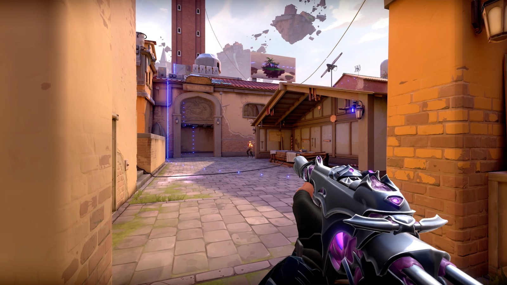

in-game bar // every state
in-game
Alt+X opens the bar over the game, Esc or a click outside goes back. The pill keeps FPS and ping in the corner without taking clicks.
pill236 × 44, top left, 18 px from the edges.
kept on screen //pinned: no focus, no clicks

 240fps18ms
240fps18msserver quiet //measured at the last router
238fps≈19msno game server yet //menu, lobby or offline
144fps—msgame just started //shown 12 seconds, then the usual pill
5 tips for VALORANTalt+x to seegame without tips //only the checks are counted
1 thing to checkalt+x to seeopen bar780 × 600, top center. Smaller screens shrink it and the list scrolls.
free plan //the list stays visible, switches locked
tweaks you can switch mid-gamepremium
power
Rago Low Latency power plan
Hardware P-states
Device power saving
memory
Disable memory compression
Disable page combining
switching //one tweak at a time, never during an app run
power
Rago Low Latency power plan
Hardware P-states
Device power saving
A run is already going in the app.
clean //standby memory emptied
fps240
ping18ms
cpu34%
gpu92%
ram61%
cleaning…fps240
ping18ms
cpu34%
gpu92%
ram48%
clean1.2 GB of cache cleared
hints //on hover, drawn by Windows
fps—
ping≈19ms
cpu34%
gpu92%
ram61%
cleanFPS measurement isn't available in this build
≈: the server doesn't answer ping, measured at the last router before it (within 1 or 2 ms)